측량및지형공간정보기사 (2010-03-07 기출문제)
1과목: 측지학 및 위성측위시스템
1. 위성측위시스템의 인공위성의 궤도 형태로 옳은 것은?
- 타원
- 쌍곡선
- 포물선
- 직선
(정답률: 84%)

2. 자기장(H)의 단위와 관계가 없는 것은?
- tesla
- oersted
- gauss
- gal
(정답률: 75%)
3. GPS에서 두 개의 주파수를 사용하는 주된 이유는?
- 전리층의 효과를 제거(보정)하기 위해
- 수신기 오차를 제거(보정)하기 위해
- 시계오차를 제거(보정)하기 위해
- 다중 반사를 제거(보정)하기 위해
(정답률: 79%)
4. 측지방위각과 천문방위각의 관계(Laplace 방정식)를 나타내는 식으로 옳은 것은? (단, 천문방위각 Aa, 천문경도 λa, 측지경도 λg, 위도 Φ, 측지방위각 Ag이다.)
- Ag=Aa-(λa-λg)sinΦ
- Ag=Aa-(λa+λg)sinΦ
- Ag=Aa-(λa-λg)cosΦ
- Ag=Aa-(λa+λg)cosΦ
(정답률: 72%)
5. 단독측위, DFPS, RTK-GPS 등에 관한 설명으로 옳지 않은 것은?
- 단독측위시 많은 수의 위성을 동시에 관측할 때 위성의 궤도정보에 대한 오차는 측위결과에 영향이 없다.
- FGPS는 신점과 기지점에서 동시에 관측을 실시하여 양점에서 관측한 정보를 모두 해석함으로써 신점의 위치를 결정한다.
- RTK-GPS는 위성신호 중 반송파 신호를 해석하기 때문에 코드 신호를 해석하여 사용하는 DGPS 보다 정확도가 높다.
- RTK-GPS는 공공측량시 3, 4급 기준점측량에 적용할 수 있다.
(정답률: 73%)
6. 기하측지학에 속하지 않는 것은?
- 탄성파 측정
- 천문측량
- 길이 및 각의 결정
- 지도제작
(정답률: 66%)
7. 어느 구면 삼각형에서 구과량이 20“가 되었다. 이 구면 삼각형의 면적이 0.349m2이라면 구의 반지름은?
- 39.8m
- 42.3m
- 45.0m
- 60.0m
(정답률: 61%)
8. 측지선이 두 개의 평면곡선의 교각을 분할할 때의 비율로 옳은 것은?
- 1:1
- 2:1
- 3:1
- 4:1
(정답률: 81%)
9. 중력이상의 주된 원인은?
- 화산폭발
- 태양과 달의 인력
- 지구의 자전 및 공전
- 지구내부의 물질분포나 지형의 영향
(정답률: 86%)
10. 3차원 좌표에 속하지 않는 것은?
- 원주좌표
- 원ㆍ방사선좌표
- 구면좌표
- 3차원직교좌표
(정답률: 52%)
11. 측지경위도에 관한 설명으로 옳지 않은 것은?
- 본초자오면과 지표상 한 점을 지나는 자오면이 만드는 적도면상 각거리를 경도하고 한다.
- 지표면상 한 점에 세운 법선이 적도면과 이루는 각을 위도하고 한다.
- 적도면에서 잰 본초자오선과 어느 지점의 천문자오선 사이의 각거리를 천문경도라 한다.
- 지구상 한 점에서의 지오이드에 대한 연식선이 적도면과 이루는 각거리를 지심위도라 한다.
(정답률: 73%)
12. GPS 관측 도중 장애물 등으로 인하여 GPS 신호의 수신이 일시적으로 단절되는 현상을 무엇이라고 하는가?
- 사이클 슬립(cycle slip)
- SA(Selective Availability)
- AS(Anti Spoofing)
- 모호 정수(Ambiguity)
(정답률: 85%)
13. 도심지와 같이 장애물이 많은 경우 특히 증대되는 GPS 관측오차는?
- 다중경로 오차
- 궤도오차
- 시계오차
- 대기오차
(정답률: 73%)
14. 중력에 대한 설명으로 옳지 않은 것은?
- 지구중력은 지구질량에 의한 인력과 자전에 의한 원심력의 합력이다.
- 표준중력은 gΦ=ge(1+βsin2Φ-β'sin22Φ)의 식으로 표시된다. (단, ge : 적도상 평균해수면에서의 중력, β, β‘ : 상수, 위도 : Φ)
- 절대측정에 의한 중력과 상대측정에 의한 중력의 차를 중력이상이라 하고 해양에서는 (-)를 나타낸다.
- 중력이상을 해석하여 지하구조해석이나 지하자원탐사에 활용할 수 있다.
(정답률: 78%)
15. 어떤 관측지점고 지구의 양극을 지나는 대원을 무엇이라 하는가?
- 적위(Declination)
- 묘유선(Prime vertical)
- 적경(Right ascension)
- 자오선(Meridian)
(정답률: 84%)
16. GPS 측량에 있어 기준점 선점시 고려사항과 가장 거리가 먼 것은?
- 전파의 다중경로 발생 예상지점 회피
- 주파단절 예상지점 회피
- 임계 고도각 유지가능 지역 선정
- 인접 기준점과 시통이 잘되는 지점 선정
(정답률: 60%)
17. 지구타원체의 편평도가 1/300 이면, 이심률은 얼마인가?
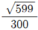
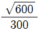
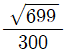
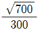
(정답률: 71%)
18. 지역타원체와 세계타원체 간의 3차원 좌표변환과 관련이 없는 것은?
- Transverse Mercator 방법
- 표준 Molodensky 변환방법
- Moldensky-Badekas 모델에 의한 7변수
- Bursa-Wolf 모델에 의한 7변수
(정답률: 76%)
19. 지구자기의 변화에 해당 되지 않는 것은?
- 부게(bouguer)이상
- 일변화
- 영년변화
- 자기폭풍
(정답률: 77%)
20. GPS 위성으로부터 전송되는 L1 신호의 주파수는 1575.42MHz이다. 광속 c=299792458m/s일 때 L1신호 100000 파장의 거리는 얼마인가?
- 10230.000m
- 12276.000m
- 15754.200m
- 19029.367m
(정답률: 65%)
2과목: 응용측량
21. 중앙종거 30m, 곡선시점과 곡선종점을 연결하는 협의 길이 300.5m인 원곡선을 설치하고자 할 때 이에 적합한 곡선반지름은?
- 310.50m
- 353.50m
- 376.2m
- 391.25m
(정답률: 32%)
22. 클로소이드곡선(Clothoid curve)에 대한 설명 중 옳지 않은 것은?
- 철도의 종단곡선설치에 효과적이다.
- 반지름(R)=곡선장(L)=매개변수(A)인 점을 특성점이라 한다.
- 클로소이드는 곡률이 곡선의 길이에 비례하는 곡선이다.
- 곡선장(L)을 일정하게 두고 클로소이드의 크기를 변화시키면 클로소이드 선상의 각 점은 대응하지 않는다.
(정답률: 38%)
23. 그림과 같이 AC 및 BD선 사이에 곡선을 설치하고자 한다. 그런데 그 교점에 장애물이 있어 교각을 측정하지 못하고 ∠ACD, ∠CDB 및 CD의 거리를 측정하여 다음의 결과를 얻었다. ∠ACD=150°, ∠CDB=90°, ∠CD=200m, 곡선반지름을 300m라 하면 C점에서 곡선시점까지의 거리는?
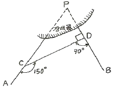
- 298.58m
- 288.68m
- 275.78m
- 268.87m
(정답률: 54%)
24. 길이 100m, 폭 20m의 도로를 성토하기 위한 6m 높이의 성토량은? (단, 성토경사 = 1:1.5)
- 13800m3
- 14400m3
- 14700m3
- 17400m3
(정답률: 45%)
25. 두 개의 수직 터널 A, B에서 추선측량을 하여 터널 내외를 연결했다. 터널 외 A, B의 좌표가 A(x=1367.54m, y=486.57m), B(x=2187.24m, y=1687.64m)이고, 터널 내 A, b의 좌표가 A(x=1367.54m, y=486.57m), B(x=2196.77m, y=1677.72m)일 때 이 터널 내외의 측선이 이루는 방위각의 차는 얼마인가?
- 29‘ 19“
- 30‘ 53“
- 31‘ 53“
- 53‘ 19“
(정답률: 52%)
26. 지상 및 지하시설물 등에 대한 지도 및 도면 등 제반 정보를 수치 입력하여 효율적으로 운영 관리하는 종합적인 관리체계를 무엇이라 하는가?
- SIS(Surveying Information System)
- CAD체계
- AM(Automated Mapping)
- FM(Facilities Management)
(정답률: 53%)
27. 경관 평가요인을 정향화하기 위하여 수평시각을 관측한 결과 30°≤θ≤60°의 값을 얻었다. 시설물에 대한 느낌으로 적절한 것은?
- 시설물은 주위와 일체가 되고 경관의 주제로서 대상에서 벗어난다.
- 시설물의 전체 형상을 인식할 수 있고 경관의 주제로 적합하다.
- 시설물이 시계 중에 차지하는 비율이 크고 강조된 경관으로 인식된다.
- 시설물에 대한 압박감을 크게 느낀다.
(정답률: 49%)
28. 터널 안에서 A점의 좌표가 (1749.0m, 1134.0m, 126.9m) B점의 좌표가 (2419.0m, 987.0m, 149.4m)일 때 A, B점을 연결하는 터널을 굴진하는 경우 이 터널의 경사처리는?
- 685.94m
- 686.19m
- 686.31m
- 686.57m
(정답률: 34%)
29. 완화곡선에 대한 설명 중 옳지 않은 것은?
- 곡선반지름은 완화곡선의 종점에서 무한대, 시점에서 원곡선의 반지름 R로 된다.
- 완화곡선의 접선은 종점에서 원호에, 시점에서 직선에 접한다.
- 완화곡선에 연한 곡선반경의 감소율은 캔트의 증가율과 같다.
- 종점에 있는 캔트는 원곡선의 캔트와 같다.
(정답률: 37%)
30. 하천의 수애선에 대한 설명으로 옳지 않은 것은?
- 수애선은 수면과 하안과의 경계선이다.
- 수애선은 하천수위의 변화에 따라 변동한다.
- 수애선은 평균수위(MML)에 의해 결정된다.
- 수애선은 동시관측에 의한 방법과 심천측량에 의한 방법으로 측량할 수 있다.
(정답률: 45%)
31. 철도 노선에서 곡선부를 통과하는 차량에 원심력이 발생하여 접선방향으로 탈선하려는 것을 방지하기 위해 바깥쪽 철로를 안쪽 철로보다 높이는 것을 무엇이라 하는가?
- 캔트(Cant)
- 슬랙(Slack)
- 완화곡선
- 반향곡선
(정답률: 59%)
32. 반지름 10cm의 구의 표면에서 구면삼각형 ABC의 각을 측정하니 A=75°, B=66°, C=49° 이었다면 구면삼각형의 면적은?
- 14.45cm2
- 15.45cm2
- 16.45cm2
- 17.45cm2
(정답률: 52%)
33. 터널의 양쪽 입구 A와 B를 연결한 지상골조 측량을 하여 A(-2357.26m, -1763.26m), B(-1385.78m, -987.33m) 및 임의점 P에 대한 방위각
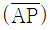
= 176° 27‘ 32“를 얻었을 때 ∠PAB는?- 38° 36‘ 49“
- 137° 50‘ 39“
- 151° 16‘ 36“
- 215° 04‘ 21“
(정답률: 58%)
34. 어느 지역의 택지조성을 하기 위하여 사각형 구분법에 의한 토공량을 계산한 결과 2000m3이었다. 이 토공이 택지내에서 균형을 이루려면 그 높이는 얼마로 하여야 하는가? (단, 사각형의 변의 길이는 가로, 세로가 각각 20m, 10m이고 사각형의 수는 40개임)
- 25m
- 10m
- 1.0m
- 0.25m
(정답률: 37%)
35. 노선의 곡선 중에서 반지름이 각기 다른 2개의 원곡선으로 구성되고 이 두곡선의 연속점에서 공통접선을 가지며 곡선중심이 공통접선에 대하여 서로 반대쪽에 있는 곡선을 무엇이라고 하는가?
- 단곡선
- 반향곡선
- 클로소이드
- 복곡선
(정답률: 64%)
36. 그림과 같은 삼각형 지역의 토량은 얼마인가? (단, 각 점에 주어진 수치는 지반고이며 m단위이고, 각 변에 주어진 거리는 수평면에 투영된 거리임.)
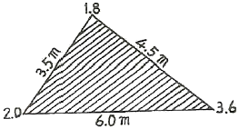
- 151.4m3
- 75.7m3
- 19.3m3
- 12.3m3
(정답률: 40%)
37. 확정측량에 대한 설명으로 옳은 것은?
- 시가지 계획을 위한 기초측량이다.
- 구획정리를 하고 환지를 교부하여 토지의 면적을 지적공부에 새로이 등록하는 이동측량이다.
- 토지구획과 형질을 변경한 뒤 새로운 획ㅈ에 이전시키는 측량이다.
- 신규측량과 이동측량을 제외한 모든 측량을 말한다.
(정답률: 40%)
38. 하천의 유량을 간접적으로 알아내기 위해 평균유속공식을 사용할 경우 반드시 알아야 할 사항은?
- 수면기울기, 하상기울기, 단면적, 최고유속
- 단면적, 하상기울기, 윤변, 최고유속
- 수면기울기, 조도계수, 단면적, 윤변
- 단면적, 조도계수, 경심, 윤변
(정답률: 52%)
39. 표면부지에 의한 유속관측 방법에 대한 설명으로 옳지 않은 것은?
- 유속은 (거리/시간)으로 구해진다.
- 시점과 종점의 거리는 하천 폭의 약 2~3배 이상으로 한다.
- 표면유속이므로 평균유속으로 환산하면 표면유속의 60%정도가 된다.
- 하천에 표면부자를 이용하여 시점과 종점간의 거리와 시간을 측정한다.
(정답률: 37%)
40. 하천의 심천측량을 하기 위해 그림과 같이 AB선에 직각으로 기선 AD=60m를 관측하였다. 현재 P의 위치에서 관측장비를 사용하여 ∠APD=40°를 측정하였다면 AP의 거리는?
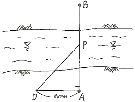
- 71.5m
- 80.5m
- 90.2m
- 95.5m
(정답률: 43%)
3과목: 사진측량 및 원격탐사
41. GIS에서 표준화가 필요한 이유로 가장 거리가 먼 것은?
- 서로 다른 기관간에 데이터 유출의 방지 및 데이터의 보안을 유지하기 위하여
- 데이터의 제작시 사용된 하드웨어(H/W)나 소프트웨어(S/W)에 구애받지 않고 손쉽게 데이터를 사용하기 위하여
- 표준 형식에 맞추어 하나의 기관에서 구축한 데이터를 많은 기관들이 공유하여 사용할 수 있으므로
- 데이터의 공동 활용을 통하여 데이터의 중복 구축을 방지함으로써 데이터 구축 비용을 절약하기 위하여
(정답률: 54%)
42. 촬영 종기선의 길이와 촬영 횡기선의 길이와의 비가 4:7일 때 횡중복도가 30%였다면 종중복도는 얼마인가?
- 40%
- 60%
- 70%
- 84%
(정답률: 32%)
43. 벡터구조에 비해 격자구조(grid 또는 raster)가 갖는 특징으로 옳지 않은 것은?
- 중첩에 대한 조작이 용이하다.
- 자료구조가 간단하다.
- 원격탐사 자료와의 연계처리가 용이하다.
- 지형의 세세한 표현에 효과적이다.
(정답률: 43%)
44. 사진판독에 관한 설명으로 옳지 않은 것은?
- 색조는 빛의 반사에 의한 것으로 식물의 집단이나 대상물의 판별에 도움이 된다.
- 질감은 사진축척에 따라 변하지 않는 판독 요소이다.
- 크기에 대한 육안의 분해능은 보통 0.2mm정도이다.
- 과고감은 평탄한 지역에서의 지형판독에 도움이 된다.
(정답률: 38%)
45. 카메라의 촬영경사(I)가 2°, 초점거리(f)가 153mm로 평탄한 토지를 촬영한 공중사진이 있다. 이 사진에서 주점(m)에서 등각점(j)까지의 거리는?
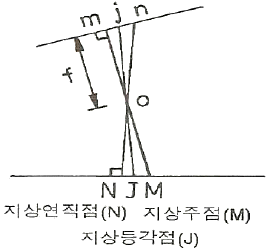
- 1.6mm
- 2.2mm
- 2.7mm
- 5.3mm
(정답률: 57%)
46. 도화(Plotting)의 정확도에 대한 설명으로 옳지 않은 것은?
- 수직 위치의 정확도는 일반적으로 기선비 또는 중복도에 의해서 변화된다.
- 60% 중복의 경우를 표준으로 생각했을 때, 표정 오차는 0.15~0.20%H(H는 촬영고도) 정도이다.
- 지적측량 등 대축척 도화의 경우에는 높은 정확도를 필요로 하지 않는다.
- 입체모델의 중복도가 커지면 표고정확도는 낮아진다.
(정답률: 36%)
47. GIS 공간객체 타입 중 1차원 객체 타입이 아닌 것은?
- 선분(line segment)
- 연속선분(string)
- 호(Arc)
- 격자셀(grid cell)
(정답률: 50%)
48. 상호표정에 대한 설명으로 옳은 것은?
- 횡시차를 소거하여 사진의 주점을 투영기의 중심에 맞추는 작업이다.
- 입체모델을 지상좌표계와 일치시키는 것이다.
- 종시차 Py를 소거하여 한 모델이 완전 입체시가 되게 하는 작업이다.
- 대기굴절, 지구곡률, 렌즈수차 등을 보정하는 작업이다.
(정답률: 45%)
49. 편위수정기를 이용한 편위수정(rectification)에 대한 설명으로 옳지 않은 것은?
- 편위수정을 거친 사진을 집성한 사진지도를 조정집성사진지도라 한다.
- 사진기의 경사에 의한 변위 및 지표면의 비고에 의한 기복변위를 수정하는 것이다.
- 수평위치 기준점이 최소한 3점이 필요하고 정밀을 요하는 경우 4점 이상이 소요된다.
- 편위수정기를 이용하는 기계적 편위수정과 수학적 좌표변환을 이용하는 해석적 편위수정이 있다.
(정답률: 30%)
50. 지상기준점으로 사용하기 위해 대공표지를 설치하고자 한다. 만약 항공사진기가 초광각 카메라(화각 : 120°)이고, 표정기준점 설치 위치의 주위에 높이가 10m인 건물이 있다면 건물에서 최소 몇 미터 이상 떨어진 곳에 대공표지를 설치해야 하는가?
- 약 10.00m
- 약 14.1m
- 약 17.32m
- 약 19.45m
(정답률: 29%)
51. 디지타이징에 의한 수치지도 제작시 발생할 수 있는 오차 유형이 아닌 것은?
- 종이지도 신축에 의한 위치 오차
- 세선화(thinning) 과정에서의 형상 오차
- 선분 교차점에서의 교차 미달(undershooting) 현상
- 인접 다각형의 경계선 중복 부분에서의 갭(gap) 발생
(정답률: 49%)
52. GIS의 응용기법 중 하나로서 공간상에 나타난 연속적인 기복의 변화를 수치적으로 표현하는 방법은?
- DXF
- FM
- DEM
- AM
(정답률: 46%)
53. 지상수신소에서 사용자에게 공급하는 위성영상자료의 포맷이 아닌 것은?
- BIL(Band Interleaved by Line)
- BSQ(Band SeQuential)
- HDF(Hierarchical Data Format)
- SIF(Standard Interchange Format)
(정답률: 38%)
54. 다음 수식은 어느 표정에 필요한 것인가?
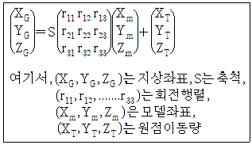
- 내부표정
- 외부표정
- 상호표정
- 절대표정
(정답률: 52%)
55. 평탄지를 촬영고도 1500m로 촬영한 연직사진이 있다. 두 사진 상에서 2점간의 시차차를 측정하니 4mm이었다면 이 두 점간의 비고는? (단, 카메라의 초점거리 153mm, 사진의 크기 23cm×23cm, 종중복도 60%임)
- 16.6m
- 32.6m
- 39.2m
- 65.2m
(정답률: 19%)
56. 촬영스트랩의 길이가 4km라고 하면 몇 매의 사진을 촬영해야 하는가? (단, 사진축척 1:10000, 종중복도 60%, 사진크기 21cm×21cm)
- 4매
- 5매
- 6매
- 7매
(정답률: 38%)
57. 항공사진 상에서 축척을 구하는데 필요하지 않은 것은?
- 촬영고도
- 표고(標高)
- 카메라 초점거리
- 사진규격(規格)
(정답률: 64%)
58. 편위수정법에 의하여 1:5000의 지형도 측정을 계획하고 있다. 편위수정을 평면기준점을 기준으로 하여 실시하였을 때 허용되는 최대 비고(표고차)는? (단, 초점거리는 150mm, 사진축척은 1:1000, 완성도상(1:5000)에서의 허용오차는 0.3mm이며, 도화에 이용될 지역은 1:10000의 사진에서 주점으로부터 3cm의 범위이다.)
- 3.0m
- 5.7m
- 7.5m
- 11.2m
(정답률: 42%)
59. 지리정보시스템의 공간분석기능에 대한 설명 중 관계가 옳은 것은?
- 버퍼 분석(Buffering Analysis)-surface 모델링, 유역분석, 경사/향 분석, 가시권 분석, 3차원가시화
- 기하학적 분석(Geometrical Analysis)-영향권 분석
- 망 분석(Network Analysis)-연결성, 방향성, 최단경로, 최적경로의 분석
- 중첩 분석(Overlay Analysis)-거리, 면적, 둘레, 길이, 무게중심 등의 정량적 분석
(정답률: 55%)
60. 센서의 분류 중에 수동방식의 센서가 아닌 것은?
- 카메라
- 초미세분광센서
- 레이다
- 마이크로파 복사계
(정답률: 59%)
4과목: 지리정보시스템
61. 삼각망 구성에 있어서 가장 정밀도가 높은 삼각망은?
- 유심 삼각망
- 사변형 삼각망
- 단열 삼각망
- 종합 삼각망
(정답률: 59%)
62. 수준측량시 중간점이 많을 경우 가장 많이 사용하는 야장기입법은?
- 고차식
- 승강식
- 양차식
- 기고식
(정답률: 55%)
63. 어떤 기선을 4구간으로 나누어 측량한 결과가 다음과 같을 때 전체 거리에 대한 확률오차는?
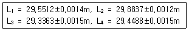
- ±0.0028m
- ±0.0021m
- 0.0015m
- ±0.0014m
(정답률: 49%)
64. 기선 D=20m, 수평각 α=80°, β=70°, 연직각 V=40°를 측정하였다. 기점 P의 높이 H는? (단, A, B, C점은 동일 평면인 지상에 있고 P점은 목표점이다.)
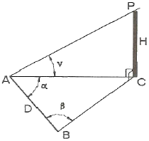
- 31.54m
- 44.80m
- 49.07m
- 58.48m
(정답률: 34%)
65. 실제 두 점 사이의 거리 40m가 도상에 2mm로서 표시될 때 축척은?
- 1/10000
- 1/20000
- 1/25000
- 1/30000
(정답률: 63%)
66. 트래버스측량에서 거리와 각의 관측정확도를 균등하게 유지하려고 한다. 600m의 거리를 ±(5mm+10ppm×L)[mm]의 EDM으로 측량한 경우에 필요한 각의 오차한계는? (단, L은 [km])
- ±1.5“
- ±2.6“
- ±5.3“
- ±7.4“
(정답률: 34%)
67. 다음 그림과 같은 결합트래버스의 측각오차식은? (단, [a] : 측각(a1~an)의 총합)
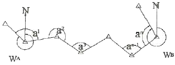
- Ea=WA-WB+[a]-180° (N-1)
- Ea=WA-WB+[a]-180° (N+1)
- Ea=WA-WB+[a]-180° (N-3)
- Ea=WA-WB+[a]-180° (N+3)
(정답률: 40%)
68. 다음 오차에 대한 설명 중 옳지 않은 것은?
- 측량에 수반되는 오차는 정오차, 우연오차, 착오 등으로 분류할 수 있다.
- 줄자에서 장력에 의한 것과 온도변화에 의한 오차는 정오차다.
- 줄자를 잡아당길 때 수평으로 되지 않아 발생하는 오차는 정오차다.
- 확률오차 ro와 표준편자 σ사이에는 σ=0.6745ro 관계식이 성립된다.
(정답률: 38%)
69. 지형을 지물과 지모로 분류할 때 지모에 해당되는 것은?
- 건물
- 하천
- 구릉
- 시가지
(정답률: 44%)
70. 측량의 오차를 최소화하기 위한 가장 좋은 방법은?
- 골조측량과 세부측량을 병행하여 하는 것이 좋다.
- 먼저 골조측량을 하고 세부측량을 하는 것이 좋다.
- 먼저 세부측량을 하고 골조측량을 하는 것이 좋다.
- 순서와는 무관하게 관측이 쉬운 것부터 하는 것이 좋다.
(정답률: 52%)
71. 아래 그림과 같이 관측된 거리를 최소제곱법으로 조정하기 위한 관측방정식으로 옳은 것은? (단, 단위는 m)
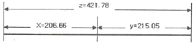
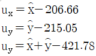
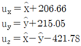
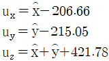
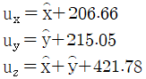
(정답률: 46%)
72. 수준측량의 활용분야에 해당하지 않는 것은?
- 지형도 작성을 위한 등고선 측량
- 노선의 종ㆍ횡단측량
- 터널의 중심선측량
- 기준점 설치를 위한 삼각측량
(정답률: 23%)
73. 다각노선의 각 절점에서 기계점의 설치오차는 없고 목표점의 설치 오차가 11mm, 방향관측오차를 최대 10“로 한다면 절점 간의 거리는 최소 몇m 이상이어야 하는가? (단, 각 절점간의 거리는 동일한 것으로 한다.)
- 110m
- 150m
- 227m
- 254m
(정답률: 47%)
74. 직사각형인 지역의 각 변을 측량하여 a=17.43±0.01m, b=10.72±0.⑤m의 값을 얻었다. 면적오차는 얼마인가?
- ±0.01m2
- ±0.⑤m2
- ±0.88m2
- ±0.99m2
(정답률: 45%)
75. 다각측량에서 1각의 오차가 10“인 5개의 각이 있을 경웅 각 오차의 총합은?
- 10“
- 22“
- 25“
- 50“
(정답률: 34%)
76. 다음의 인공위성 측량 시스템 중 그 성격이 다른 하나는?
- SPOT
- IKONOS
- KOMSA-2
- GPS
(정답률: 25%)
77. 임의 지점 P1의 좌표가 (-2000m, 1000m)이고, 다른 지점 P2의 좌표가 (-1250m, 2299m)일 때
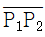
의 방위각은?- 30° 00‘03“
- 59° 59‘57“
- 210° 00‘03“
- 239° 59‘57“
(정답률: 36%)
78. 아래의 축척별 등고선 간격으로 옳지 않은 것은?
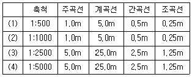
- (1)
- (2)
- (3)
- (4)
(정답률: 55%)
79. 수준측량의 관측값으로부터 표고계산을 한 결과이다. 각 측점의 표고 중 틀리게 계산된 측점은? (단, 측점 No.1의 표고는 10.000m 임)
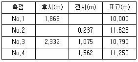
- No.1
- No.2
- No.3
- No.4
(정답률: 48%)
80. 삼각 및 삼변측량에 대한 설명으로 옳지 않은 것은?
- 삼각망의 조건식수는 삼변망의 조건식수 보다 많다.
- 삼변측량의 계산에는 코사인(cos) 제 2법칙을 사용한다.
- 기하학적 도형조건으로 인해 삼변측량은 삼각측량 방법을 완전히 대신할 수 있다.
- 삼각망의 조정시 필요한 조건으로 측점조건, 각조건, 변조건 등이 있다.
(정답률: 55%)
5과목: 측량학
81. 측량기준점에서 국가기준점에 해당되지 않는 점은?
- 지자기점
- 수로기준점
- 지적기준점
- 통합기준점
(정답률: 39%)
82. 측량업의 등록시 특급기술자가 1명 이상 필요한 측량업은?
- 공공측량업
- 측지측량업
- 공공영상도화업
- 연안조사측량업
(정답률: 41%)
83. 지도도식 규칙에 따라 외도곽 바깥쪽에 표시되는 것으로 옳지 않은 것은?
- 도엽명 및 도엽번호
- 지형지물 및 행정구역 경계
- 인접지역 및 행정구역 색인
- 편집연도 및 수정연도
(정답률: 41%)
84. 일반측량을 시행하는데 기초로 할 수 없는 자료는?
- 기본측량성과
- 일반측량성과
- 공공측량성과
- 공공측량기록
(정답률: 54%)
85. 기본측량성과를 국외로 반출이 불가능한 경우는?
- 축척 5만분의 1ㅣ 이상의 대축척의 지도를 반출하는 경우
- 관광객 유치를 목적으로 측량용 사진을 제작하여 반출 하는 경우
- 정부를 대표하여 국제회의 또는 국제기구에 참석자가 측량용 사진을 반출하는 경우
- 축척 2만 5천분의 1 지도로서 국가정보원장의 지원을 받아 보안성 검토를 거쳐서 반출하는 경우
(정답률: 56%)
86. 공공측량성과심사 수탁기관은 성과심사의 신청접수일로부터 통상적으로 며칠이내에 심사결과를 통지해야 하는가?
- 10일
- 20일
- 30일
- 60일
(정답률: 41%)
87. 측량의 기준에 관한 설명 중 틀린 것은?
- 측량의 원점은 직각좌표의 원점과 수준원점으로 한다.
- 위치는 세계측지계에 따라 측정한 지리학적 경위도와 평균 해수면으로부터의 높이로 표시한다.
- 수로조사에서 간출지의 높이와 수심은 기본 수준면을 기준으로 측량한다.
- 세계측지계, 측량의 원점 값의 결정 및 직각좌표의 기준 등에 필요한 사항은 대통령령으로 정한다.
(정답률: 21%)
88. 각 좌표에서의 직각좌표를 TM(Transverse Mercator, 횡당 머레이터) 방법으로 표시할 때의 조건으로 옳지 않은 것은?
- X축은 좌표계 원점의 자북선에 일치하도록 한다.
- 진북방향을 정(+)으로 표시한다.
- Y축은 X축에 직교하는 축으로 한다.
- 진동방향을 정(+)으로 한다.
(정답률: 42%)
89. 지명 및 해양지명의 제정, 변경사항을 심의ㆍ의결하여 결정하는 위원회는?
- 토지수용위원회
- 국가지명위원회
- 중앙지적위원회
- 지명변경위원회
(정답률: 55%)
90. 토털 스테이션에 대한 성능검사의 주기로 옳은 것은?
- 1년
- 3년에 2회
- 5년에 2회
- 3년
(정답률: 56%)
91. 지리학적 경위도, 직각좌표, 지구중심 직교좌표, 높이 및 중력 측정의 기준으로 사용하기 위하여 위성기준점, 수준점 및 중력점을 기초로 정한 기준점은?
- 삼각점
- 경위도원점
- 통합기준점
- 지자기점
(정답률: 54%)
92. 측량ㆍ수로조사 및 지적에 관한 법률상 용어의 정의로 옳은 것은?
- 측량이라 함은 공간상에 존재하는 일정한 점들의 위치를 측량하고 그 특성을 조사하여 도면 및 수치로 표현하거나 현지에 재현하는 것을 말하며, 각종 건설 사업에서 요구되는 도면작성 등은 제외된다.
- 지적측량이란 토지를 지적공부에 등록하거나 지적공부에 등록된 경계점을 지상에 복원학 위하여 필지의 경계 또는 좌표와 면적을 정하는 측량을 말한다.
- 공공측량은 지방자치단체 및 대통령이 정하는 기관만이 실시하는 측량을 말한다.
- 측량성과는 측량에서 얻은 각종기록과 최종성과를 말한다.
(정답률: 46%)
93. 공공측량의 실시공고에 포함되어야 할 사항이 아닌 것은?
- 측량의 종류
- 측량의 목적
- 측량의 규모
- 측량의 실시기간
(정답률: 35%)
94. 기본측량의 실시공고는 해당 시ㆍ도 또는 특별자치도의 게시판 및 인터넷 홈페이지에 최소 며칠 이상 게시하여야 하는가?
- 3일
- 7일
- 15일
- 30일
(정답률: 59%)
95. 측량ㆍ수로조사 및 지적에 관한 법률의 제정 목적에 해당되지 않는 것은?
- 국토의 효율적 관리
- 국민의 소유권 보호
- 해상 교통안전의 기여
- 측량 및 수로조사의 기술 향상
(정답률: 50%)
96. 일반측량업자가 할 수 있는 공공측량의 설계한정금액은 얼마인가?
- 1천만원 이하
- 1천만원 이하
- 3천만원 이하
- 5천만원 이하
(정답률: 43%)
97. 측량업종은 크게 측지측량업, 지적측량업, 그 밖에 항공촬영, 지도제작 등 대통령령으로 정하는 업종으로 구분할 수 있다. 다음 중 항공촬영, 지도제작 등 대통령령으로 정하는 업종에 해당되지 않는 것은?
- 일반측량업
- 수치지도제작업
- 수로조사측량업
- 지하시설물측량업
(정답률: 38%)
98. 1:25000 및 1:50000 지형도 도식적용규정에서 지류의 표시원칙으로 잘못된 것은?
- 지류계와 지류 기호로 표시한다.
- 기호는 도곽하변에 대하여 수직으로 표시한다.
- 잡초지를 포함한 거친 땅으로서 경지로 사용되지 않는 토지는 초지 기호로써 표시한다.
- 일반적으로 도상에서 5mm2인 것에 대하여 표시한다.
(정답률: 37%)
99. 측량ㆍ수로조사 및 지적에 관한 법률의 벌칙 중 3년 이하의 징역 또는 3000만원 이하의 벌금에 처하는 경우는?
- 속임수, 위력 등으로 측량업 또는 수로사업과 관련된 입찰의 공정성을 해친 자
- 성능검사를 부정하게 한 성능검사대행자
- 측량기준점표지를 이전 또는 훼손하거나 그 효용을 해치는 행위를 한 자
- 고의로 측량성과 또는 수로조사 성과를 사실과 다르게 한 자
(정답률: 52%)
100. 국토해양부장관은 측량기본계획을 몇 년마다 수립하여야 하는가?
- 3년
- 5년
- 7년
- 10년
(정답률: 50%)